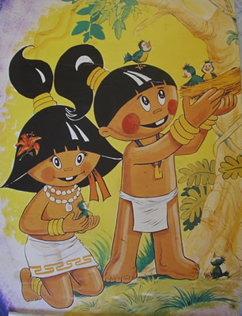

"Baconao Park is a large park region, located about 20 kilometers away from the city of Santiago de Cuba, with a total surface of 923.6 km^2 (356.6 sq mi). In 1987, it was declared a World Heritage Biosphere Reserve by the UNESCO."
"The name Baconao is related to the name of a little native that lived in the south of Cuba during the pre-Columbian period. Legend mentions a magical tree, called bacona, that allowed the kid to play music from the lagoon's snails."